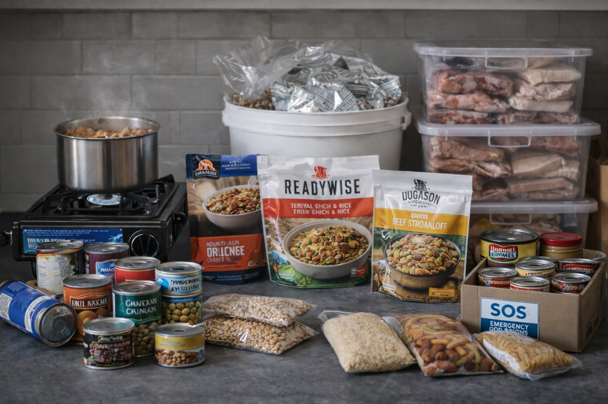

Food Security (Practical)
Last updated: 2025-12-30 · 10 min read

- Food security depends on cooking fuel and water, not just storage.
- Design for no-cook days and low-fuel weeks.
- Track depletion simply to avoid surprise shortages.
- Keep systems quiet, simple, and repeatable under stress.
Purpose: Food security isn’t just storage. It’s the ability to prepare, rotate, and adapt food under changing conditions.
Cooking without the grid
- Propane or butane stoves
- Electric cooking tied to battery systems
- No-cook meal backups
Assume electricity may be intermittent; your food plan should still work.
- Pick 2–3 cooking modes: camp stove, grill, and one indoor-safe option (if available).
- Stock fuel sized to your habits (propane canisters, charcoal, wood).
- Practice one ‘low-fuel’ meal weekly so it’s familiar.
Water dependency
Many dry staples require more water than expected. Always plan food and water together.
Most ‘easy’ foods still require water for cooking, cleaning, and hydration.
- Budget water for cooking + drinking: plan meals that use minimal water.
- Keep quick-cook staples (instant rice, couscous, oats) for water savings.
- Include disposable/low-wash options for short disruptions (paper plates, wipes).
Extended timelines
- 1–3 months: heavy reliance on dry staples
- 3–12 months: careful rotation and supplementation
- Beyond: resupply becomes more important than storage
Longer disruptions shift priorities: durability, nutrition, and resupply strategy.
- Keep some long-life staples (rice/beans) plus ready-to-eat foods for transitions.
- Add a replenishment rhythm: weekly top-offs even if shelves look normal.
- Consider dietary constraints early (allergies, kids, seniors).
Psychology and routine
Predictable meals reduce stress. Simple routines preserve energy and morale.
During uncertainty, routine is a stabilizer—especially around meals.
- Create a simple meal schedule (breakfast base + rotating dinners).
- Keep caffeine habits stable; abrupt changes can amplify anxiety.
- Use meals as a ‘check-in’ moment: hydration, electrolytes, mood scan.
What not to rely on
- Gardening as a primary food source
- Unfamiliar foods you won’t eat
- Single-point solutions
Avoid single points of failure.
- Don’t rely only on delivery, restaurants, or just-in-time grocery trips.
- Don’t rely on one store/brand; diversify suppliers and formats.
- Avoid exotic items you won’t eat—waste is a hidden cost.
Fuel efficiency
Match food types to available cooking fuel.
Fuel is a limiter; choose meals and methods that stretch it.
- One-pot meals reduce fuel and cleanup: chili, lentil stew, rice bowls.
- Batch cook when power is available; reheat with minimal fuel later.
- Use a lid, windscreen, and pre-soak beans to cut cook time.
Depletion awareness
Track consumption during disruptions.
Know your burn rate so you can adjust before you run out.
- Track: ‘days of meals’ remaining, not just number of cans.
- Set trigger points: at 30 days left, shift to rationing mode.
- Keep a ‘bridge week’ reserve you don’t touch unless supply chains break.
Community exchange
Staples trade well when variety is scarce.
Cooking constraints: the hidden bottleneck
Food storage is easy. Cooking is the hard part. In extended disruptions you are constrained by fuel, water, and time.
- No-cook days: shelf-stable meals, bars, nut butters, canned items
- Low-fuel days: soups, one-pot meals, pressure cooking if available
- Fuel-limited weeks: focus on foods that rehydrate quickly
Water dependency: plan the pair
Many staples assume abundant water. For every food layer, ask: how much water does this meal require?
- Dry beans require more water and time than lentils.
- Rice and pasta are moderate; oats can be low-water.
- Canned meals trade cost for lower water use.
Refrigeration strategy
If power is intermittent, treat refrigeration as a time window, not a guarantee. Freeze water bottles to stabilize temperature and group fridge items by priority.
- Use a “first to spoil” shelf and eat that first.
- Keep freezer mostly full (thermal mass helps).
- When in doubt: cook it, then eat it.
Nutrition under stress
Under stress you’ll crave quick calories. Keep protein and fats present to prevent energy crashes.
- Add olive oil or nut butter to simple meals.
- Keep easy protein options (canned fish, jerky, lentils).
- Use spices to keep meals emotionally “alive.”
Depletion tracking in 60 seconds
During disruptions, the biggest risk is untracked consumption. Use one simple method: mark each opened category (rice, beans, canned meals) on a single note.
- If a category is opened twice, it becomes a resupply priority.
- If a category is untouched, reduce it next cycle and diversify.
Small exchanges often matter more than big stockpiles.
- Keep trade-friendly items: salt, spices, coffee/tea, hygiene basics.
- Trade skills too: cooking, repair, first aid, childcare.
- Coordinate quietly with 1–2 trusted neighbors for redundancy.
Next step
Combine food, water, and power into a single household resilience plan.
Educational content only.